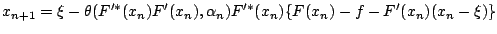
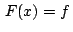
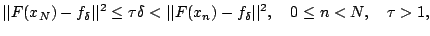
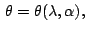
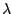
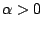
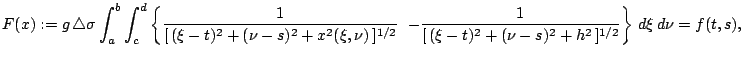
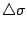
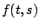

Next: About this document ...
A family of generalized Gauss-Newton methods for 2D inverse
gravimetry problem
Alexandra Smirnova
Dept. of Mathematics and Statistics
Georgia State University, 30 Pryor St., Atlanta GA 30303
smirn@mathstat.gsu.edu
We consider a generalized Gauss-Newton's scheme

for
solving nonlinear unstable operator equation
 in a Hilbert space. In case of noisy data
we propose a novel a posteriori stopping rule

and
prove a convergence theorem under a source type
condition on the solution. As a consequence of this
theorem we obtain convergence rates for five different
generating functions,
 of a spectral
parameter  and .
The new algorithms are tested on the 2D inverse
gravimetry problem reduced to a nonlinear integral
equation of the first kind:

where is the
gravitational constant,
 is the
density jump on the interface, and  is the
gravitational strength anomaly. The results of
numerical simulations are presented and some practical
recommendations on the choice of parameters are given.
Bruce Fast
2006-03-11